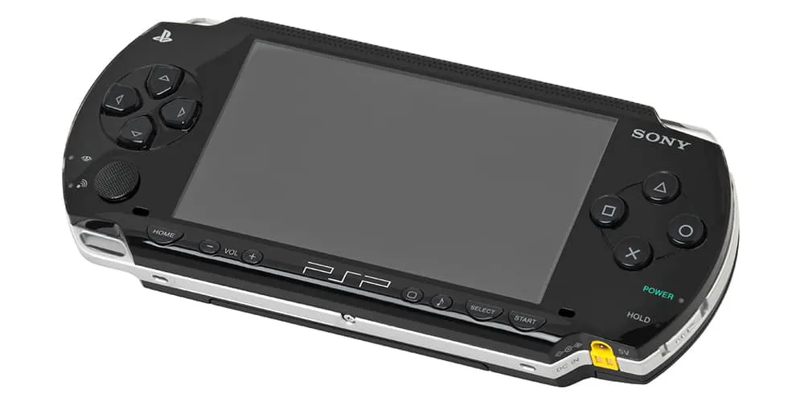
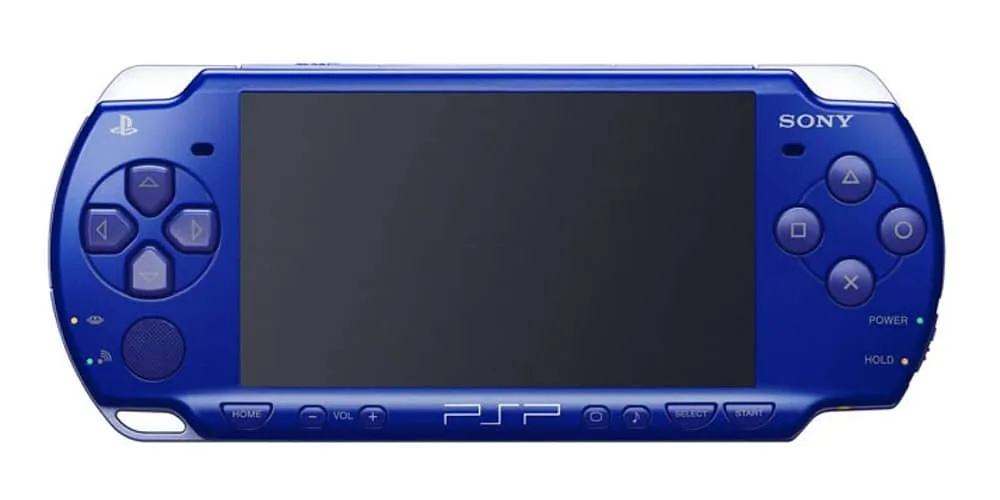
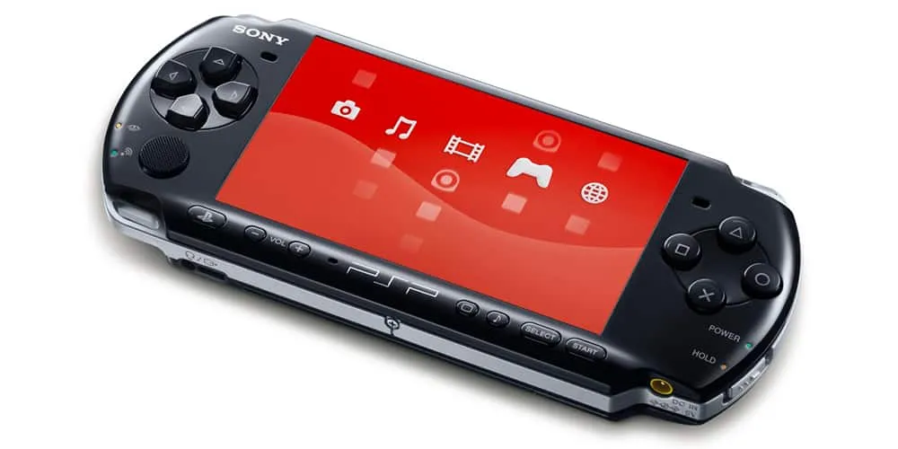
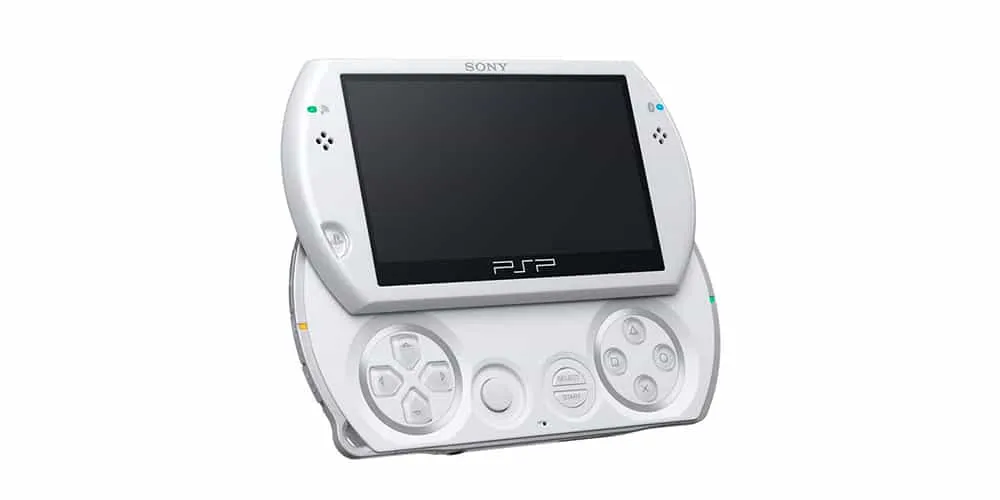
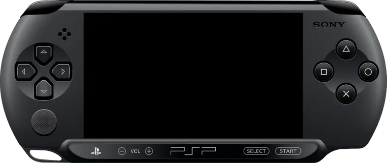

O PSP é um console de videogame feito e distribuído pela Sony. Sendo lançado primeiramente no Japão em 2004 e na América do Norte e outras regiôes em 2005 e o primeiro portátil da linha de consoles PlayStation, tendo sido anunciado na E3 em 2003.
Mas com todas as alterações em seu hardware ao longo de 10 anos, pode não ser fácil escolher o modelo certo para você, portanto abaixo estão listados cada ponto positivo e negativo de cada uma de suas versões.
PSP 1000
Prós
- O modelo mais barato
- Ergonômico e durável
- Slot UMD de alta qualidade
Contras
- Sem porta de saída de vídeo
- Display não tão bom quanto de outros modelos
- Durabilidade e ergonomia prejudicam a suavidade
- Único modelo com 32MB; todos os outros tem 64MB
Visão Geral:
A maneira mais fácil de identificar tal modelo é pelos auto-falantes que estão localizados na parte inferior do console, enquanto o 2000 e 3000, na parte superior.
PSP 2000
Prós
- Brilho da tela mais forte que a do seu antecessor
- Mais fino e elegante que seu predecessor
- Porta de saída de vídeo para exibição na TV
- Edições personalizadas limitadas
Contras
- Tela não tão brilhante ou responsiva quanto do 3000
Visão Geral:
O PSP 2000 é muito similar ao 1000, porém, seus auto-falantes ficam na parte superior do console e são consideravelmente menores.
PSP 3000
Prós
- Ótimo display
- Mantém o design elegante e a saída de vídeo do 2000
- Mais idições limitadas personalizadas
Contras
- Scan lines
Visão Geral:
O PSP 3000 é muito similar ao 2000. O botão "home" foi mudado para a logo do PlayStation para combinar com o PlayStation 3. Tem todos os pontos positivos que o 2000, porém com um display ainda mais responsivo com um brilho mais forte, mas entre o 2000 e 3000, o veredito será seu gosto pessoal. O PSP 3000 é o console que agradará a maior parte das pessoas.
PSP GO
Prós
- Extremamente compacto
- Acessório de base parecido com o Nintendo Switch (vendido separadamente)
Contras
- Sony não dá suporte ao PSP, logo comprar jogos pode ser um problema sem o drive UMD
- A bateria não é tão fácil de substituir no GO quanto em outros modelos
Visão Geral:
É muito fácil diferenciar PSP GO de outros modelos, não se parece em nada com os outros; é muito menor, sua tela desliza e não há um slot UMD, sendo esse seu ponto mais negativo, assim aceitando apenas mídia digital.
Não seria um problema se a Sony não tivesse parado de dar suporte á loja digital do PSP. Mas não é o fim do mundo, contudo, usuários podem comprar jogos via PlayStation Store’s website, sendo 100% digital, requer um cartão SD para assim armazenar os jogos.
Bônus: PSP Street (E1000)
Prós
- É um item de colecionador
Contras
- É um modelo de orçamento que é mais caro que modelos padrão pois foram feitas em quantidades limitadas
- Sem botão de configuração de brilho
- Apenas um auto-falante
- Sem wi-fi
Visão Geral:
Deixemos esse modelo de lado, sim?
O PSP E1000 (também chamado de PSP Street) foi originalmente lançado como um console de orçamento reduzido no final da vida útil do PSP. Sony não fez muitos desse modelo (tendo sido lançado em poucas regiões) sendo visto mais como um item de colecionador, embora seja a versão mais simplificada do console.
O fato de que este console (antes) econômico agora é caro tornando este modelo tanto quanto bastante inútil. Se você vê-lo on-line, passe, a menos que esteja pensando em adicionar este modelo especificamente à sua coleção.